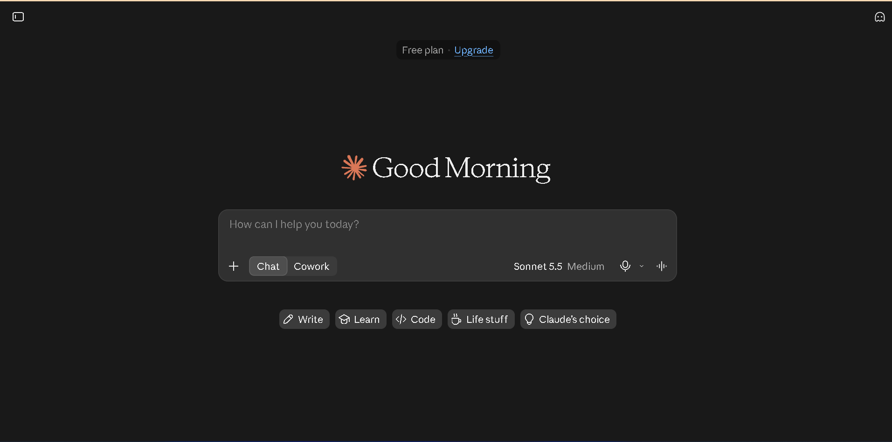
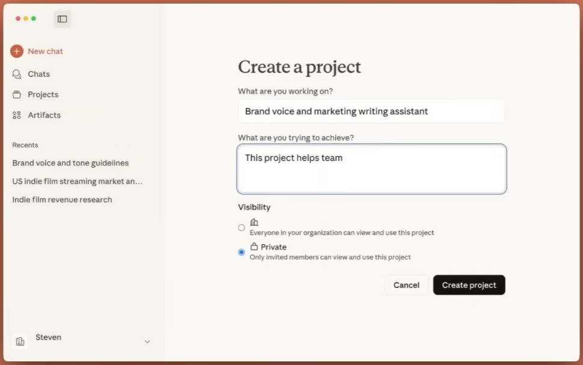
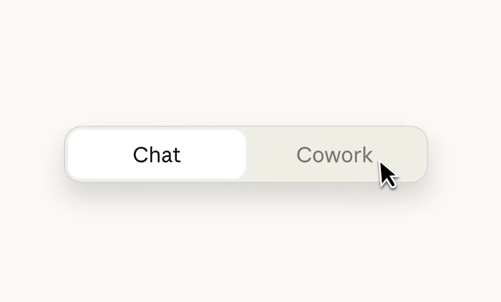
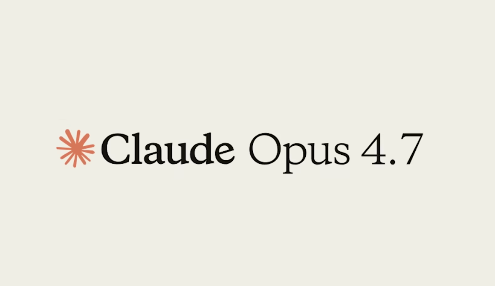
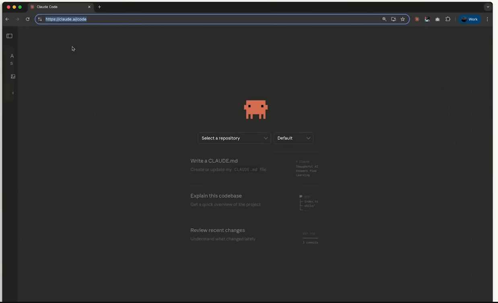
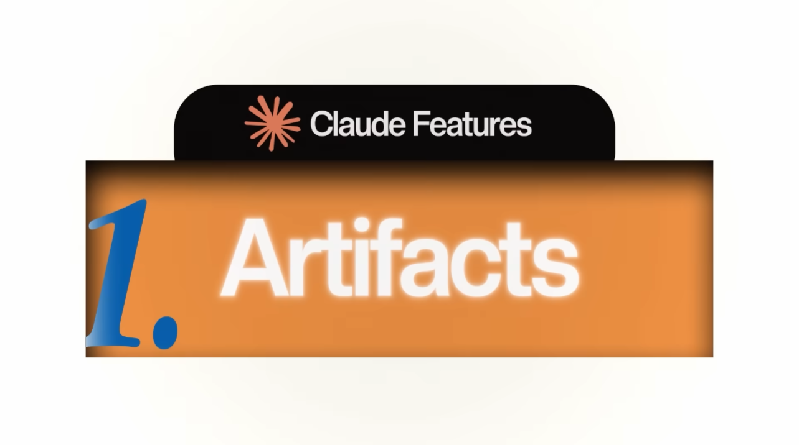
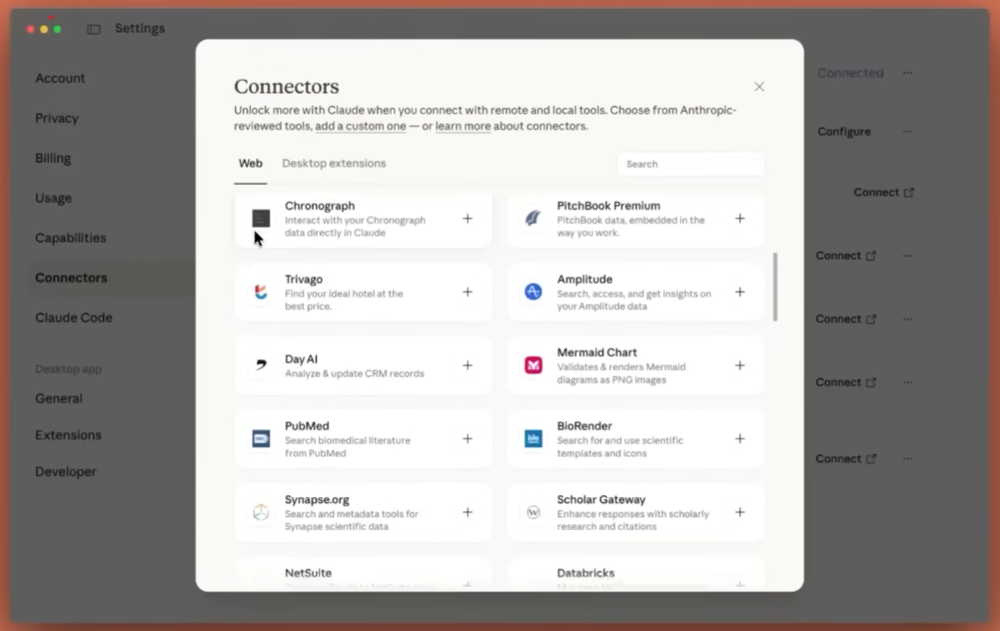
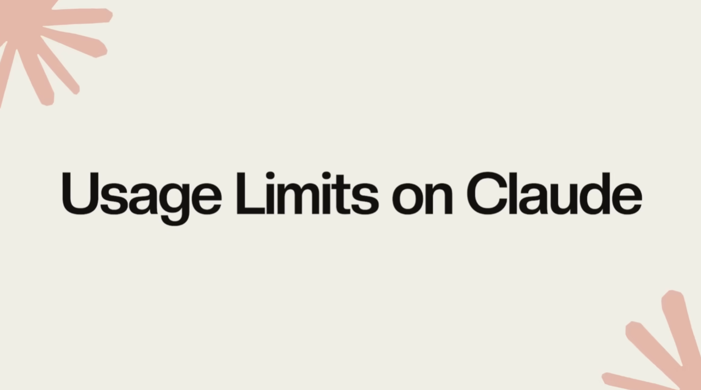

Claude AI Explained: A Beginner's Guide to Every Major Feature
Claude is more than a chat box. It has projects, a desktop assistant, a coding tool, a design tool and a long list of integrations, and most beginners only ever touch the first one.
This guide walks through each part in the order that makes sense to learn them, so you can decide what is worth setting up first.
What is Claude?

Claude is an AI chatbot made by Anthropic. You can use it in your web browser, in the iPhone and Android apps, or in the desktop app for Mac and Windows.
At its simplest it works like ChatGPT: you type a question and it answers. The real value comes from the extra tools built around the chat.
Claude Projects: stop repeating yourself

A Project is a workspace where you store background material once, so Claude uses it in every chat inside that project.
Ishan gives a good example. He uploaded all the reel scripts he wrote over six months. Claude now knows his phrasing and writing habits, and it can draft new scripts in his style without being briefed again.
- Best for work you repeat, such as scripts, reports or customer replies
- Similar in idea to a custom GPT
- Saves you from pasting the same context into every conversation
Claude Cowork: an assistant for your computer

Cowork appears inside the desktop app on Windows and Mac. It is available to paid subscribers only.
Think of it as a helper that works on your laptop for you. It can:
- Reorganize files and folders
- Read through folders, collect data and turn it into a PDF
- Edit images and create PDFs
- Work on the web through Claude in Chrome
When a regular chat sounds like a Cowork task, Claude may suggest moving it there.
Choosing a Claude model

Anthropic offers several models, each suited to a different kind of job. Model versions change often, so check the current names in the app. The video was recorded when Opus was at version 4.7.
- Claude Opus: the most capable model. Best for coding, deep reasoning and complex tasks, but it uses your usage allowance fastest.
- Claude Sonnet: a good starting point for everyday writing, such as assignments, PDFs, video scripts and reel scripts.
- Claude Haiku: suited to quick, simple tasks.
Claude Code: build apps by describing them

Claude Code lets you ask Claude to build websites, apps and live dashboards. It is a popular way to "vibe code", which means describing what you want and letting the AI write the files.
Three ways to use it
- Inside the Claude desktop app
- As an extension in VS Code, where Claude creates and edits files while you talk to it
- Through the Claude Code CLI, a command-line tool that works on whatever folder you are in
If you start describing an app in a normal chat, Claude may offer to hand the job to Claude Code.
Web search and Research
Click the plus (+) icon in the chat box to find two useful options.
- Web search lets Claude look up current information online.
- Research digs deep into a topic. It takes longer, but you get a well-sourced report at the end.
Use your voice for better prompts
Typing long prompts often makes you lose your train of thought, and that leads to weak answers. Ishan speaks his prompts instead, using a voice dictation tool called Wispr Flow.
In his demo he rambled out a request for AI tools for solo content creators, and the tool turned it into a clean, well-structured prompt. Cleaner prompts mean fewer retries and less wasted usage.
Claude Design
Claude Design is a newer tool for creating visuals. You can make Instagram carousels, mobile app screens, presentations, logos and other interfaces.
You upload references and files, Claude organizes them into a file structure, and it gives you the result in HTML. The helpful part is what you can do next:
- Export the design to Canva and edit it by hand
- Send it to Claude Code and start building a real app from it
Learning with Claude and Artifacts

Claude is a patient teacher. Ask it to explain something visually, for example the double-slit experiment in physics, and it can build an interactive demo instead of just writing text.
These demos are called Artifacts. An artifact is something Claude builds by writing code behind the scenes, such as a small website, a live dashboard or a simple mobile game, all running right inside the chat.
Claude in Chrome
Claude in Chrome is a browser extension that lets Claude act as an agent in your browser. It can handle small, repetitive jobs like:
- Comparing products on Amazon
- Placing orders for you
- Scheduling LinkedIn posts
- Replying to people who comment on your social posts
Teach Claude
This feature lets Claude watch how you do a task in the browser and repeat it later. Ishan's example is invoicing: read the billing details in an email, open the invoicing software, enter the amount and create the invoice. Once Claude has seen the steps, it can run the same process for you.
Connectors: link Claude to your other apps

Connectors let Claude work with apps you already use. You will find them under the plus icon in the chat.
Ishan connected Gmail so Claude can summarize each morning's unread email, point out what needs attention and what can wait, and draft or send replies. Other examples from the video:
- Gamma for presentations
- HeyGen for AI avatar videos
- Higgsfield for AI video
Skills and plugins
A skill is a saved set of instructions, written as a Markdown (.md) file. It tells Claude what steps to follow, what input it needs and what output to give.
Without skills, you would explain how to make an infographic from scratch every time. With one, you type the skill name, give your input and Claude does the rest.
- A group of related skills is called a plugin, for example a marketing plugin with skills for different marketing jobs.
- The skill creator skill helps you build new skills. It asks what the skill should do, what style you want and which steps to follow, then writes the file for you.
- You can also import skills made by other people by adding their .md file to your Claude app.
- To run a skill, type a forward slash followed by its name.
Scheduled tasks in Cowork
If you do the same job every day, turn it into a scheduled task. Ishan used to find viral AI tweets by hand, turn them into reel scripts and save them as a PDF.
Now Cowork does this at 10:00 a.m. every day. It uses Claude in Chrome to find the seven most viral tweets on his feed, writes scripts in his style and saves a PDF to his desktop.
Claude Dispatch: control your laptop from your phone
Dispatch connects your phone to Cowork on your computer, as long as the laptop is on. If you are away from home and need a file, you can ask for it from the Claude app.
For instance, you could ask for the image of your signature on your desktop, or ask Claude to email it to someone. Cowork handles it on the laptop while you stay on your phone.
Moving from ChatGPT to Claude
If ChatGPT already knows a lot about you, you do not have to start from zero. The process in the video goes like this:
- Copy the memory-transfer prompt provided on the Claude website.
- Paste it into ChatGPT and let it list what it knows about you.
- In Claude, open Settings, then Account.
- Paste that information into the context field and save.
Developer platform and usage limits

The Claude Developer Platform is where you get an API key and build your own apps with Claude. API use is billed separately, so you need to add credit.
Watch your usage limits, because they can run out quickly. Go to Settings, then Usage or Billing to see your current usage. It resets every few hours, and Claude Design has its own separate usage bar. If an urgent task needs more room, you can top up by paying extra.
Quick summary
- Use Projects to keep context for repeated work.
- Pick Opus, Sonnet or Haiku to match the task.
- Try Cowork, Claude in Chrome and Dispatch to hand off computer tasks.
- Build apps with Claude Code and visuals with Claude Design.
- Save time with Connectors, Skills and scheduled tasks.
Pick one or two of these and try them this week rather than everything at once.
Stuck on a step, or want us to cover one of these features in more detail? Send us a message on the contact page or leave a comment on the original video, and we will help.
Credit: This guide is based on the YouTube video by Ishan Sharma. Watch the original here: Claude tutorial by Ishan Sharma. All product names belong to their respective owners, and features or limits may have changed since the video was published.